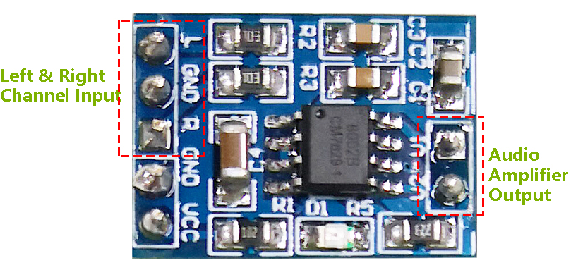

Audio Module and Speaker
Speaker

Size: 20x30x7mm
Impedance:8ohm
Max Input Power: 2.0W
Wire Length: 10cm

Audio Amplifier Module
{kind=link}
The Audio Amplifier Module incorporates the HXJ8002 audio power amplifier chip, known for its low power supply requirements. This chip is capable of delivering an average audio power of 3W to a 3Ω BTL load, maintaining low harmonic distortion (below 10% at 1KHz) when powered by a 5V DC supply. It amplifies audio signals efficiently without the need for coupling or bootstrap capacitors.
The module can be powered by a DC source ranging from 2.0V to 5.5V, with an operating current of 10mA and a typical standby current of just 0.6uA. It effectively drives speakers with impedances of 3Ω, 4Ω, or 8Ω, producing robust sound output. Enhanced pop and click circuitry minimizes noise during power transitions, making this module ideal for portable and battery-operated projects as well as microcontroller applications due to its compact size, high efficiency, and low power consumption.
IC: HXJ8002
Input Voltage: 2V ~ 5.5V
Standby Mode Current: 0.6uA (typical value)
Output Power: 3W (3Ω load) , 2.5W (4Ω load) , 1.5W (8Ω load)
Output Speaker Impedance: 3Ω, 4Ω, 8Ω
Size: 19.8mm x 14.2mm